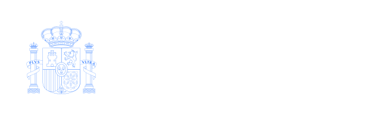

Victor Tuà Portfolio
this summer / este verano / aquest estiu
Aquest projecte es pot fer gràcies a una subvenció dins dels programes de garantia juvenil, ORDRE EMO/298/2015, de 16 de setembre i ORDRE EMO/361/2015 de 10 de Desembre gràcies a:
